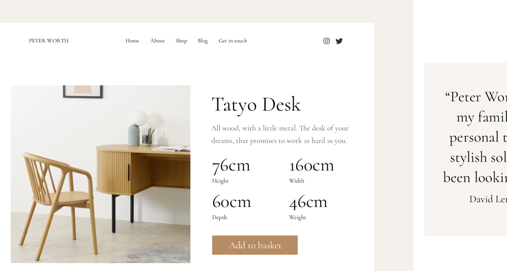
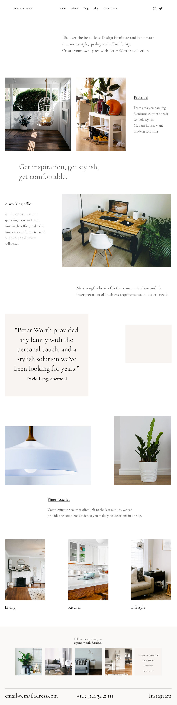
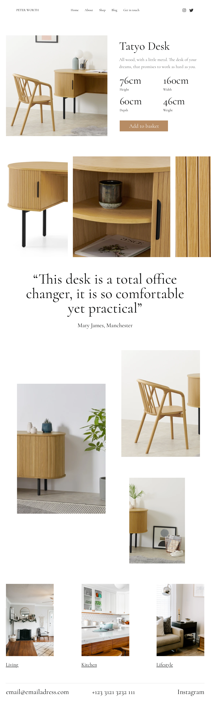

<section>
    <div class="wrapper">
        <div class="grid-full">


<div class="marginbottom--xxxl"></div>
<h1 class="emma">Property Finder Concept (nvestment pitch)</h1>

<div class="marginbottom--m"></div>


    

<div class="marginbottom--l"></div>
<div class="col grid-ninety">
    <h3 class="emma">The Problem</h3>
    <p>I was approached by Peter from a previous client's recommendation and asked if I could help design and deliver a website that would match their brand and assist in online presence, which he was in need of due to his shop having to close down during "lockdown" in March 2020. He wanted a place where he could list his items, and sell them online (ready to order models).<br>Peter needed to upload and edit the pages himself to allow constant updating of new products.</p>
</div>

<div class="col grid-ninety">
    <h3 class="emma">The Solution</h3>
    <p>With Peter's permission, I sat down with his customers to ask simple questions about what his brand means to them, why they pick him and would they ever shop online instead of walking instore, the answers returned were honest and interesting. The users insisted they prefered shopping and comparing online first, but would always rate Peter's work in their first to visit. With this in mind, I approached the design using a simple, clean style for the visuals of the website to match the products, to give the feeling that the product did the talking. Working alongside the photographer with constant updates to Peter, the end solution was loved by the client and the customers.</p> 
</div>

<div class="col grid-ninety">
    <h3 class="emma">My Responsibilites</h3>
    <p>Initial capture of the website requirements, website strategy, prototype, design, regular feedback sessions with client, co-design with photographer, design iterations, development of the WordPress build.</p>
    
    <div class="marginbottom--m"></div>
    
    <div class="marginbottom--m"></div>    


    <div class="marginbottom--m"></div>
    
</div>
<div class="marginbottom--xl"></div>

<div class="grid-full col">
  <div class="CrossPageNavigation">
    <div class="grid-full">
      <div class="CrossPageNavigationPrevious">
        <strong>Go to the next case study</strong><br />
          <a href="benefitfraud.html">GOV.UK - Report Benefit Fraud</a>
      </div>
    </div>
  </div>
</div>


</div>
</div>
</section>